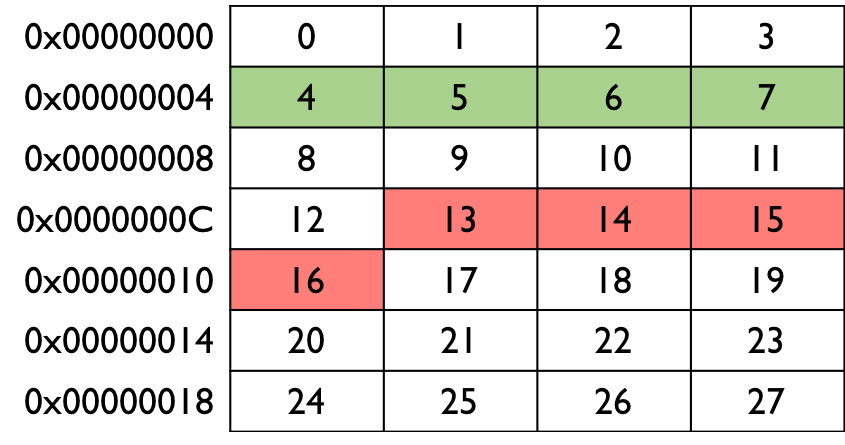
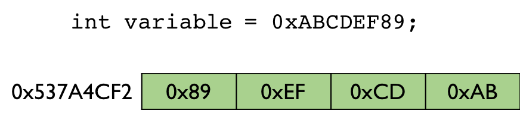

Before starting on pointers, it is worth re-capping about simple variables. A variable simply represents a location in memory (RAM). Memory is typically organised into bytes (8 bits), which each location or 'slot' given a unique address. Due to the large number of addresses (e.g. a 32-bit machine will have 232 = 4,294,967,296 possible memory addresses!) the addresses are usually shown in hexadecimal (i.e. 0x00000000 to 0xFFFFFFFF). Each location can then store a single byte value (in binary).
When we talk about an 8-bit or 32-bit machine, we are referring to the word size. You can actually think of the memory as being organised in two-dimensions, with the width (i.e. number of columns) equal to the word size. The image below shows an example for a 32-bit (4 byte) machine.

Suppose we had an integer variable. These are typically 32-bits or 4 bytes (platform dependent). Each integer variable would therfore be stored in a row in this particular memory space. Note that the variables are aligned to the rows as shown in green and not as shown in red. Therefore the addresses of integers (and other 32-bit datatypes such as floats) often have addresses that are multiples of 4 to ensure that they are natually aligned in the memory.
We will look at the basics of pointers in C/C++ by looking at a simple example.
main.cpp
1 2 3 4 5 6 7 8 9 10 11 12 13 14 15 | #include <iostream> int main() { // initialise a variable with a value int variable = 255; // create a pointer to point to the variable address using the // address-of operator & int *pointer = &variable; std::cout << "Variable = " << variable << std::endl; // print the address of the variable std::cout << "Variable address = " << pointer << std::endl; // print the value store in the variable the pointer is pointing to // using the dereference operator * std::cout << "Variable value = " << *pointer << std::endl; } |
We have simply created an integer and initialised it with a value. We then create a pointer using the * character. Since we are going to be pointing this pointer at a integer variable, we must create a pointer of the correct type (i.e. an int). We initialse the pointer with the address of the integer variable. This essentially points the pointer to the same address in memory that the integer variable is stored.
We access the address of the variable using the address-of operator &. Note that it is very bad practice to create a pointer and not initialise it (a dangling pointer). It could end up pointing at a undefined memory location and then allow your program to access important parts of the system memory becoming a security risk!
The code then just prints out the value stored in the variable and the address of the variable (by printing out the value of the pointer pointing at the variable's location in memory).
Although the pointer stores a memory address, we can also use it to access the value stored at that address by using the de-reference operator *.
When the code is run, the output is as follows:
Variable = 255 Variable address = 0x7ffeee148b5c Variable value = 255
Note that the address is automatically printed in hexadecimal format and will be different every time the code is executed.
Below is another example of using pointers.
main.cpp
1 2 3 4 5 6 7 8 9 10 11 12 13 14 15 16 17 18 19 20 21 22 23 24 25 | #include <iostream> int main() { // initialise variables with values double a = 0.0, b = 0.0; std::cout << "a = " << a << ", b = " << b << std::endl; std::cout << "&a = " << &a << ", &b = " << &b << std::endl; // create a 'null' pointer - nullptr is C++11 // note the type must match the datatype of the variable // the pointer is going to point to double *pointer = nullptr; std::cout << "Pointer initialised to: " << pointer << std::endl; // now point it to 'a' and use it to give 'a' a value pointer = &a; std::cout << "Pointer now pointing to 'a': " << pointer << std::endl; *pointer = 99.9; // now point it to 'b' and do the same pointer = &b; std::cout << "Pointer now pointing to 'b':" << pointer << std::endl; *pointer = 77.7; // print 'a' and 'b' to check values have indeed changed std::cout << "a = " << a << ", b = " << b << std::endl; } |
In the code, we create two double variables 'a' and 'b', initialse them to zero and print out their values and address (using the & operator). We then create a pointer to a double and safely initialise it with nullptr. This is the C++11 way of creating a null pointer and avoids us creating a dangling pointer.
We then point it to 'a', and use it to give 'a' a value using the de-reference operator *. We then do the same with 'b'. In this way, we have given the two variables 'a' and 'b' values without accessing them directly, but indirectly thorugh the pointer. The output is below:
1 2 3 4 5 6 | a = 0, b = 0 &a = 0x7ffeeaf25b28, &b = 0x7ffeeaf25b20 Pointer initialised to: 0x0 Pointer now pointing to 'a': 0x7ffeeaf25b28 Pointer now pointing to 'b':0x7ffeeaf25b20 a = 99.9, b = 77.7 |
We have seen how an integer is stored across multiple bytes in memory. But which order is the integer stored? This is determined by the endianness of the machine. The code below demonstrates this using pointers.
main.cpp
1 2 3 4 5 6 7 8 9 10 11 12 13 14 15 16 17 18 19 20 21 22 23 24 25 | #include <iostream> int main() { // create a 32-bit (4 byte) variable unsigned int variable = 0xABCDEF89; std::cout << std::uppercase; // print hex values in uppercase std::cout << "Variable value is 0x" << std::hex << variable << std::endl; std::cout << "Size of variable is " << sizeof(variable) << " bytes\n"; std::cout << "Address of variable is " << &variable << std::endl; // create a char (byte) pointer and point it at the variable address // we need to cast the variable to a char to match the pointer type unsigned char *pointer = (unsigned char *)&variable; // iterate through each byte in the 4-byte integer variable std::cout << "-----------------------\n"; for (int i = 0; i < 4; i++) { // now print out the byte at that address address std::cout << "| " << (unsigned int *)pointer << " | "; std::cout << (unsigned int)*pointer << " |\n"; // increment the pointer to point at the next address pointer++; } std::cout << "-----------------------\n"; } |
The code first creates an unsigned 32-bit integer, stores the value 0xABCDEF89 in it and prints out some information such as this value, the address and the size of the variable. Note that we use the std::uppercase and std::hex statements to format the ouput. We then create a pointer to an unsigned char and set it to the same address as the variable. Note that we need to type-cast the integer varialbe to an unsigned char. At this point we know have two different variables in the code (an int and a char) that point to the same address in memory.
We then loop through each of the 4 bytes in the integer by incrementing the pointer address by 1 each time and printing out the address and value stored in that byte.
The output of the code is shown below.
1 2 3 4 5 6 7 8 9 | Variable value is 0xABCDEF89 Size of variable is 4 bytes Address of variable is 0x7ffee1ab6b58 ----------------------- | 0x7ffee1ab6b58 | 89 | | 0x7ffee1ab6b59 | EF | | 0x7ffee1ab6b5a | CD | | 0x7ffee1ab6b5b | AB | ----------------------- |
From this, we can determine that the least-significant byte (0x89) is actually stored at the lowest memory address. This is known as little-endian format. With big-endian format, the most-significant byte (0xAB) would be stored first. The image below demonstrates how it would be stored in a little-endian system.

Note that the memory address in the image is a fictious one and does not match the actual one in the output, which will change each time the code is executed.
We can also create pointers to objects. When you have a pointer to an object, you just need to access member variables and methods in a slightly different manner as demonstrated in the example below.
1 2 3 4 5 6 7 8 9 10 11 12 13 14 15 16 17 18 19 20 21 22 | #include <iostream> // Simple dummy class for example purposes class Foo { public: int bar; }; int main() { // create an object of class 'Foo' and use the dot operator (.) // to access a member variable Foo foo; foo.bar = 99; // create a *pointer* to an object of class 'Foo' // note we use the 'new' operator to allocate memory and // construct a 'Foo' object there Foo *pointer = new Foo(); // since it is a pointer, we use the arrow operator (->) // to access a member variable pointer->bar = 77; } |
Note that when we create an object directly we use the dot operator . to access the member variable. However, when we create a pointer to an object, we must use the arrow operator -> to access the member variable.